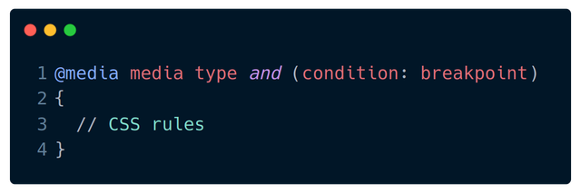

Media query, nada mais é do que uma estrutura do CSS que permite aplicar estilizações especificas para uma página web de acordo com certas condições, fazendo assim com esta página possa se adequar ao layout de tela em diferentes tamanhos e tipos de mídia.
A sintaxe básica ao utilizarmos media query é a seguinte:

No exemplo acima, podemos observar a sintaxe dos media queries, primeiramente utilizamos a expressão @media e logo em seguida definimos a condição dentro dos parênteses.
Sua funcionalidade serve para direcionar determinado CSS para um meio específico de dispositivo, ou seja, definem para qual tipo de media, o CSS que você aplica em seu site será direcionado.
Um media feature é a largura da janela do documento, normalmente usado para atribuir uma condição que vai testar se o que foi definido é verdadeiro ou falso, ou seja, são elementos do CSS que atribuídos a estrutura do media para exibir quando a estilização sofrerá modificação.
De forma simplificada, podemos destacar alguns: